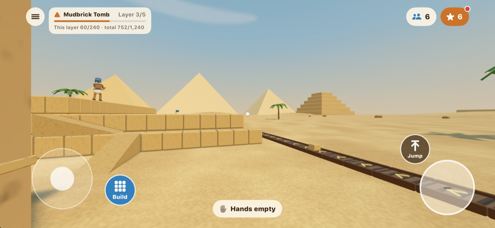
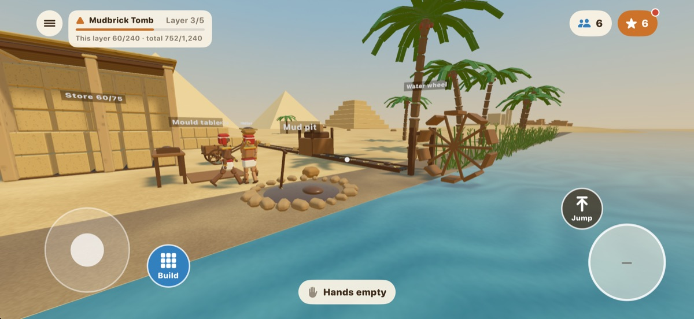
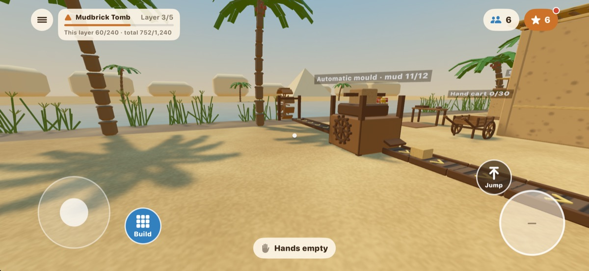
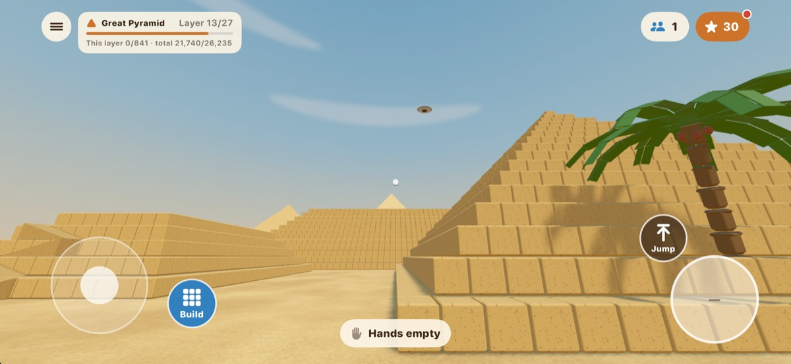
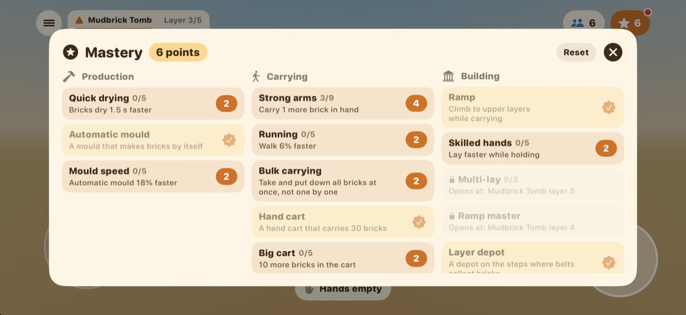

In the game
Mud, bricks, workers and the Nile.





Every brick by hand
Mud from the river, a wooden mould, the sun to dry it, and your own hands to set it in the layer.
Ramps and a hand cart
Climb the steps you built, lay ramps up the sides and push a cart full of bricks to the top.
Workers with jobs
Hire workers and make them diggers, moulders, carriers or masons. Each needs a hut of their own.
Water wheels and belts
Wheels on the Nile turn conveyor belts that carry mud to automatic moulds and bricks to the stores.
A mastery tree
Bricks earn mastery: stronger arms, faster drying, bigger loads, ramps, belts and more.
Calm and offline
No internet, no timers chasing you. A slow sunset over the dunes and the Nile.
Three monuments
From a mudbrick tomb to the Great Pyramid.
Guides
Support
A bug, an idea or a question? Write to us at hyapps@outlook.com. We read every message.
Is Pyramid Craft free?
Yes. It is free to play, with no ads and no in-app purchases.
Does it need the internet?
No. The whole game plays offline. Game Center leaderboards update when you are online.
How do I play?
Walk with the stick on the left and look around by dragging on the right side of the screen. The big button does whatever you are looking at: dig mud, pour it into a mould, take dry bricks, lay them. Follow the tasks and the gold arrow at the start.
Does the game go on while it is closed?
No. Nothing happens while the game is closed; you carry on exactly where you left off.
I got stuck somewhere. What can I do?
Jump up one brick with the Jump button. If you are boxed in by your own buildings, open Build and take one down with Remove.
Will my progress move to my new phone?
Yes. The game keeps a backup in your own iCloud. Sign in with the same Apple Account and iCloud on the new phone.
Is it suitable for children?
Pyramid Craft has no violence, no chat, no account, no ads and no in-app purchases.